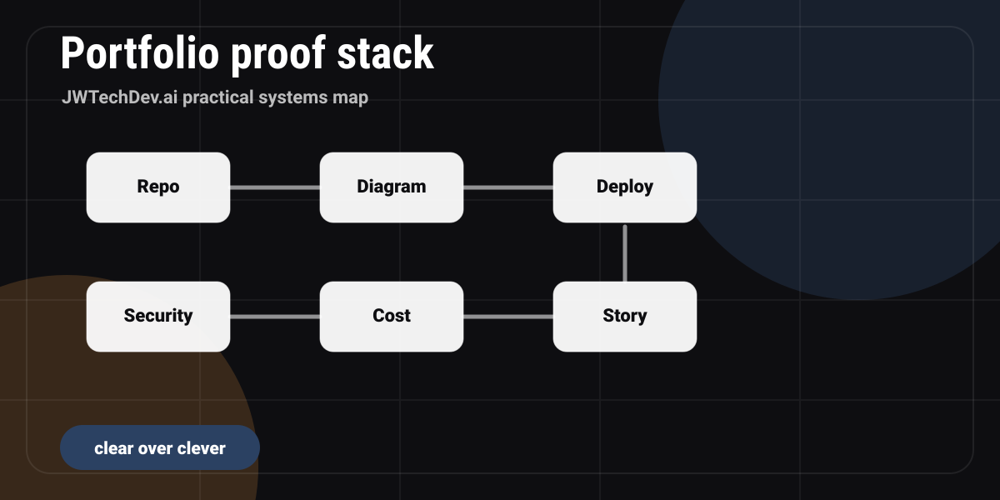

What should a cloud portfolio project include?
A practical cloud portfolio project checklist covering architecture, deployment, security, cost, monitoring, documentation, and interview storytelling.

Quick answer
A cloud portfolio project should include a working artifact, a clear architecture diagram, a deployment path, security decisions, cost guardrails, monitoring notes, a README, and a short explanation of what you would improve next.
The goal is proof of thinking
A portfolio project is not only a demo. It is evidence of how you think. A hiring manager, mentor, client, or collaborator should be able to look at the project and understand the problem, the architecture, the tradeoffs, and the next improvement.
That means a small complete project is usually better than a big unfinished one. The best beginner cloud projects are scoped enough to finish and clear enough to explain.
The seven parts of a strong project
Working artifact
A live page, app, API, dashboard, or demo people can inspect.
Repo
Clean code structure, meaningful commits, and setup instructions.
Architecture diagram
A simple picture showing users, DNS, hosting, compute, storage, and data flow.
Security notes
Identity, access, secrets, and what you intentionally kept private.
Cost notes
Expected cost, free-tier assumptions, and guardrails.
Monitoring notes
Logs, alerts, error handling, and how you would troubleshoot.
A beginner-friendly project path
Start with a static website because it teaches ownership, deployment, file structure, links, assets, Git, and publishing without forcing you into unnecessary backend complexity. Then add an architecture plan for a form or data capture system. That lets you show backend thinking without paying for infrastructure you do not need yet.
After that, add a README that explains why you chose static hosting first, what the future backend would look like, and what security gates would be required before collecting real data.
What to write in the README
Your README should answer five questions: What problem does this solve? How is it architected? How do I run or view it? What tradeoffs did you make? What would you improve next?
Do not write the README like a school assignment. Write it like an engineer explaining the project to a teammate who has ten minutes to understand the system.
How to talk about it in interviews
Use the project to show judgment. Say what you kept simple, what you made secure, what you did not build yet, and why. That is more impressive than pretending every beginner project is a production-grade platform.
A strong sentence sounds like: "I chose GitHub Pages for this version because the site is static, the operating cost is zero, and I wanted to separate the public page from any future lead-capture backend."
Portfolio project picker
What do you need to prove first?
Portfolio proof checklist
0 of 6 checkedFAQ
Does a portfolio project need a database?
No. A database is useful only when the project needs persistent dynamic data. A static-first project can still demonstrate strong cloud thinking.
How complex should the first project be?
Simple enough to finish, polished enough to explain, and structured enough to show judgment.
Should I include screenshots?
Yes. Screenshots help reviewers understand the result quickly, especially if they do not run the project locally.
Want the working resource?
Request the Cloud Portfolio Project Pack for project ideas, README structure, and interview talking points.
Request access